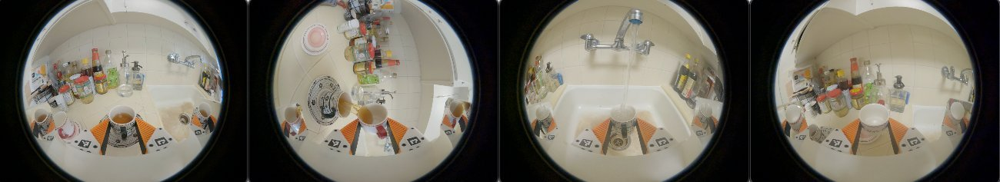
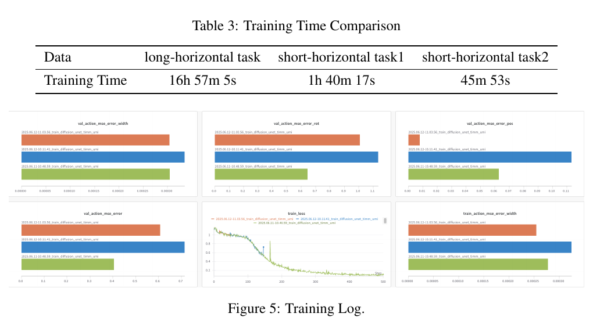
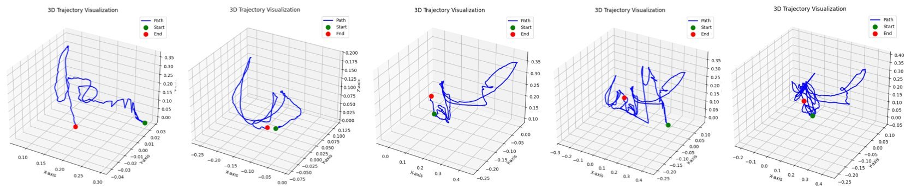

Propose the research direction
Formulated the project around human-preferred task decomposition and reuse of short-horizon manipulation data.
Robot learning · Demonstrations · Human preferences
Human-guided causal subtask modeling for reusable robot demonstrations
I developed a Stanford CS224R experiment into MCSM, a single-author CVPR 2026 workshop poster connecting human-preferred task decomposition with UMI data collection, trajectory processing, and early diffusion-policy training.

01 · Research question
A coffee-and-cleanup routine includes motions that also appear elsewhere: grasp a cup, put it on a saucer, pour, rinse, and return it. Recording every complete routine separately can duplicate substantial parts of the demonstration effort.
I investigated a way to use language models to propose reusable subtask structure, with human preferences guiding the form of the decomposition. The experiment then connected that structure to UMI demonstrations and a comparison of data and training costs.
How should a long task be divided so that its demonstrations remain useful, reusable, and grounded in physical actions?
The task involved placing an empty cup on a saucer, transferring coffee from another cup, and cleaning the original cup. It gave the project a concrete setting in which language-level boundaries could be compared with the movements being recorded.
02 · The method

Describe the objects, initial situation, and intended outcome to an LLM. In the report’s implementation, DeepSeek generated 447 candidate responses for the coffee-and-cleanup task.
An expert labeled 174 responses as preferred and 273 as non-preferred. Features such as sentence length, tokens, vector representations, and style patterns formed separate feature matrices for the two groups.
This operationalized a preference for concise, action-oriented guidelines that could be connected to manipulation subtasks.
Compare a new response with both feature matrices using cosine similarity. A reward criterion favors the preferred pattern and penalizes similarity to the non-preferred pattern; responses that do not meet the criterion are regenerated.
Use the decomposition to organize UMI recording. Process the demonstrations into trajectories, reuse the existing pick-and-place model and dataset, and compare the complete-task data with pouring and cleaning subtasks.

03 · Physical data collection
I built a Universal Manipulation Interface for collecting demonstrations and recorded the full coffee routine alongside its new subtasks. The collected GoPro videos provide observations of a person demonstrating the motions.

These web-ready clips were selected from the original UMI collection to show the three physical subtasks: placing the cup, pouring coffee, and cleaning the original cup. They document human demonstrations collected with the UMI setup; they are not robot-policy rollouts.
| Recorded task | Videos | Reported duration |
|---|---|---|
| Full coffee-and-cleanup sequence | 119 | More than 40 s |
| Pour coffee | 107 | About 10 s |
| Clean cup | 97 | About 17 s |
Pick-and-place reused the existing cup_wild_vit_l_1img model and Zarr data. I collected new pouring and cleaning demonstrations rather than recording that reusable component again.
The processing and training environment was part of the engineering work. After local virtual-machine setup difficulties, I configured the Ubuntu/Miniforge UMI workflow on AWS EC2, while using Colab for language and feature-processing experiments.
The recording counts describe the collected archive. The training-time comparison below uses a much smaller subset.
04 · Experimental results
The course report contains three kinds of evidence: preference-style scores, recorded training time, and trajectory visualizations. Each answers a different part of the research question.
Language-level evaluation
| Generation | Similarity to preferred style | Similarity to non-preferred style | Reward |
|---|---|---|---|
| Unsteered generation | 0.122 | 0.110 | 0.028 |
| Feature-guided generation | 0.182 | 0.147 | 0.047 |
Preferred-style similarity rises from 0.122 to 0.182, and reward rises from 0.028 to 0.047. Similarity to the non-preferred group also increases, so the two similarities need to be interpreted together.
The experiment provides an initial test of a specified decomposition style using one expert’s labels. It motivates further work on whether useful task structure remains consistent across people, tasks, and physical contexts.
Small-scale diffusion-policy runs
Each run used seven videos and two epochs under the report’s stated configuration. The full-sequence run took 16 h 57 m 05 s; the two subtask runs together took 2 h 26 m 10 s.
| Run | Wall-clock time | Global steps |
|---|---|---|
| Full sequence | 16 h 57 m 05 s | 500 |
| Pour coffee | 1 h 40 m 17 s | 50 |
| Clean cup | 45 m 53 s | 147 |
The comparison measures the wall-clock cost of these short runs. The subtask datasets produced different retained trajectory counts, and the report notes higher final training losses for the subtask runs. Those details matter when interpreting the observed time reduction.

Demonstration trajectory analysis
The report extracts position trajectories from the demonstrations and connects subtask endpoints using linear interpolation. The visualization compares three subtask traces, their connected sequence, and a directly recorded full-task trace.

The comparison preserves recognizable portions of the task, including motion toward the faucet. It is a qualitative inspection of the extracted paths. Learning reliable transitions and executing the composed sequence on a real robot remained open steps in the course report.
05 · Research development
Explore human-guided decomposition, build the UMI collection workflow, and study preference scores, training cost, and extracted trajectories in a concrete coffee task.
I developed the course experiment into Multimodal Causal Subtask Modeling for Scalable VLA Pipelines in Long-Horizon Manipulation, presented as a single-author poster across the 3D-LLM-VLA / FMEA / ActiVis CVPR 2026 workshop context. It organizes task decomposition, reusable subtask data, trajectory composition, and per-subtask policies into a broader long-horizon learning agenda.
The next questions concern how to locate ambiguous subtask boundaries, learn transitions between skills, and determine when demonstrations remain useful across embodiments. The course experiment provides an initial instantiation of the preference-steering and data-reuse idea; broader causal decomposition and complete real-arm deployment are research directions for further work.
06 · Project presentation
The archived recording explains the course poster and the early direction of the project. The written report provides the more detailed feature-matrix implementation, experiment conditions, and quantitative tables summarized above.
07 · My contribution
I proposed the project, collected the data, guided the experiments, and completed the report. My work spanned the physical collection interface, language-level task structure, and the infrastructure needed to process and inspect the demonstrations.
Formulated the project around human-preferred task decomposition and reuse of short-horizon manipulation data.
Built the UMI collection interface and collected full-task, pouring, and cleaning demonstrations for the experiment.
Worked on preference features and reward-guided generation, organized trajectory processing, and set up the UMI workflow on AWS EC2 alongside Colab experiments.
Guided the experiments, inspected similarity scores, training runs, and trajectory visualizations, and prepared the course report and poster.
The course report’s Team Contributions section identifies my project, data-collection, experiment, and writing responsibilities. The course and MCSM posters are single-author artifacts.
08 · What I carry forward
A decomposition determines what a person demonstrates, what the learning system can reuse, and where one skill must hand control to the next. That made task structure a physical and human-facing design problem, alongside the learning algorithms.
The experiment also exposed a useful limitation of fluent language guidance: a model may add steps such as “check the environment setup” that are underspecified for manipulation. I remain interested in grounding such descriptions in observations, affordances, and execution outcomes.
This connects to my current work on task-conditioned evidence acquisition and my Arm-200 coffee workstation: what does a robot need to know at a skill boundary, and what feedback should cause it to revise the plan?